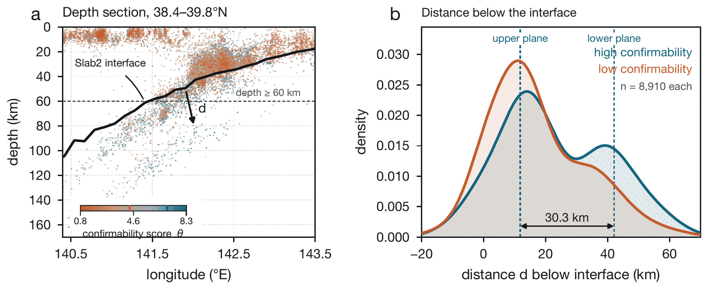

Machine learning
AI for geoscience
Machine-learning pickers now build earthquake catalogues with five to fifty times more events than routine networks, and nobody reviews most of them. Our interest is less in making the models bigger than in knowing what their output is worth: which detections are earthquakes, how that can be measured, and how a whole processing chain can be run so that each step can be checked.
Can human seismologists verify machine-learning detections?
In a routine network catalogue every event has been looked at by an analyst. Machine-learning catalogues leave most detections unexamined, but whether they are earthquakes can still be measured, because each one can be checked blind against its own waveforms. Human seismologists returned 4,800 blind verdicts on 1,200 detections from six catalogues and confirmed 60 to 98% of the events they were willing to judge.
A score fitted to seven quantities that a catalogue already records reproduces that judgement and transfers to a sequence it was not trained on, so the panel's standard can be applied to millions of events. The score also separates the catalogues geometrically: at Ridgecrest the high-scored events trace the conjugate strike-slip fault network, and beneath northeast Japan they resolve both planes of the double seismic zone where the low-scored events blur them. We suggest releasing machine catalogues in tiers by this score (Meng, Huang, Ma & Ma, submitted; preprint, data and code).
Machine-learning catalogues coloured by confirmability score
Data released, paper under reviewSeisForge catalogues and scores from the released data, doi:10.5281/zenodo.22288706; the paper is under review. The score ranks events; it is not a calibrated probability. The thirds are score terciles within each catalogue and, unlike the maps in the preprint, are not matched in magnitude or depth. Large catalogues are shown as a random subset of 25,000 events. Try Ridgecrest with only the top or only the bottom third.

Picking and detection
EdgePhase is a deep-learning phase picker that uses the recordings of several neighbouring stations together to pick P and S arrivals (Feng, Mohanna & Meng, 2022, G-Cubed). Combining back-projection with matched-filter detection finds offshore earthquakes that networks miss (Feng, Meng & Huang, 2020, JGR). Dense catalogues built this way underlie the swarm and slow-slip studies on the swarms page, and compressive sensing makes large fibre-optic (DAS) datasets manageable.
Agent-based seismological workflows
A catalogue from continuous data passes through many stages: downloading, phase picking, association, location, relocation, and quality control, each with parameters that matter. We are building workflows in which AI agents run these standard tools end to end, with every parameter choice and intermediate product written to disk so that a seismologist can audit or rerun any step. The relocated Hawaiʻi catalogue on the swarms page was built with such a pipeline (PhaseNet, REAL, HYPOINVERSE, hypoDD). The same concern with checkable results runs through our work on AI-assisted mathematics, where results are checked by computer (for example in Lean) wherever possible.
Key papers
- 2026Submitted (preprint) · data & code
- 2022Geochemistry, Geophysics, Geosystems, e2022GC010453
- 2020JGR: Solid Earth, e2020JB019599